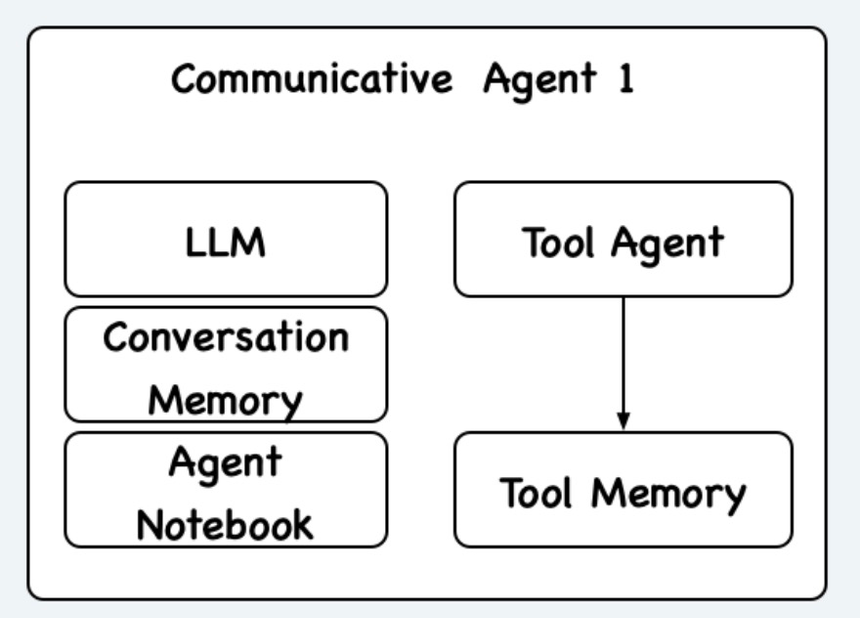

欢迎来到 MetaAgentVerse 🪐!#
MetaAgentVerse是一个多agent协作的框架，核心思想在于定义通用的协议，使得不同的agent在实现一个adapter之后，都能够接入该框架中，并在该框架中进行沟通协作。框架核心特点为:
分布式: 允许不同agent运行于不同设备上，通过网络进行交互。目前我们通过docker在单台机器上模拟这一环境，但理论上未来可以直接部署到不同设备上。
异步执行: 允许不同agent在执行任务的过程中继续交互，而不是一味等待其他agent的执行结果。这一特点使得agent的任务执行效率更高，同时也更加灵活。
🚀 为什么会设计这个框架#
目前大部分的agent在设计之初并不考虑multi-agent合作的情况，我们将现有的agent称为Tool Agent，因为他们更像是作为一个智能的tool完成某一个给定的任务。为了使这些不同的Tool Agent可以进行沟通，我们定义了一个Communication Layer将Tool Agent包裹起来，并将这整个看作一个Communicative Agent agentverse/communication/communication_layer.py，结构大体如下:

Communication Layer中，包含几个重要的组件:
LLM: 用于跟外界（其他agent等）进行沟通，同时也会给自己的Tool Agent分配任务（这个LLM可以和Tool Agent的LLM不一样，比如我们可以用基于GPT-3.5的OpenAI Assistant作为Tool Agent，但用GPT-4作为Communication Layer的LLM）
Conversation Memory: 存储了Communicative Agent与其他Agent的沟通记录，包括任务的目标、聊天过程、结果等。因为我们希望Agent不是一个启动一次就结束的程序，而是一个可以持续的实体，所以Conversation Memory应该是一个数据库(截止至2024.2.3写文档时还未完全支持)，存储了历史所有任务的所有聊天记录。
Agent Notebook (代码里应该叫agent_contact): 存储了之前所有与该agent合作过的agent信息，以及从之前合作过程中得出的对其他agent的评价，方便以后该agent找队友时进行参考。(截止至2024.2.3写文档时还未完全支持)
Tool Agent: 就是不同的agent，可以是OpenAI Assistant、ReAct agent、Open Interpreter等第三方agent，他们只负责去完成Communication Layer里的LLM给他们分配的任务，不会参与到实际的与其他agent交互的过程中。
为了使不同的Communicative Agent可以协同完成任务，我们需要一个中心服务器，这个服务器的功能包括:
Agent Registry: 记录了所有接入MetaAgentVerse的agent的信息，包括agent的描述，agent的能力等。所有agent在启动的时候都应该以规定方式向这个服务器注册自己。同时支持根据agent的特征进行查找并返回合适的agent。
Session Manager: 记录了所有正在进行的任务的信息，包括任务的目标、任务的参与者、任务的状态等。有点像是微信里的一个群聊，只不过这个群聊是由不同的agent组成的。接收到一个agent发送了消息到某个群里的话，就会自动把消息转发给这个群里其他agent。
🤖 如何设计机制？#
为了使不同agent可以协同完成任务，我们将完成任务的过程分为两阶段:
Team Up: 在这一阶段，Communication Layer的LLM会接收到一个goal（例如是外界用户传入的goal），然后根据Agent Notebook中的信息，决定:
如果之前合作过的agent中有合适的agent，就会向服务器发送组队请求，然后等待服务器返回的群聊id
如果没有合适的agent，就会向服务器发送agent查找，给出自己认为可以合作的agent的特征，然后等待服务器返回查找到的相关agent列表。并最后发送组队请求
Coordination: 在这一阶段，Communication Layer可以向刚刚创建的群聊中发送消息。接下来这个群就负责完成这个goal了。
Coordination是最复杂的阶段。为了使得agent之间可以比较高效地进行沟通，我们实现了一些机制:
沟通顺序: 为了可控性，每个时刻我们只允许一个agent说话，在它说完之后，自己决定下一个说话的agent。
消息类型: 我们定义了不同的消息类型供agent自行选择，包括:
DISCUSSION: 正常的讨论信息
SYNC_TASK_ASSIGNMENT: 同步任务分配，在这一消息中，agent会向其他agent分配任务，讨论将等到任务完成后，得到结果反馈才会继续。
ASYNC_TASK_ASSIGNMENT: 异步任务分配，在这一消息中，agent会向其他agent分配任务，同时讨论继续，不会阻塞。被指派任务的agent会去执行，并在执行完成后立刻把结果发到群里。
INFORM_TASK_RESULT: 任务执行结果的反馈
INFORM_TASK_PROGRESS: 被分配到异步任务后，发送一条消息确认收到任务。
PAUSE: agent决定暂停讨论，直到某个之前异步分配出去的任务完成再继续。
CONCLUDE_GROUP_DISCUSSION: 讨论结束，任务完成。
💻 代码结构#
agentverse/agents: 存放不同tool agent的接入代码，目前支持ReAct Agentagentverse/agents/react、OpenAI Assistantagentverse/agents/openai_assistant、Open Interpreteragentverse/agents/open_interpreter。对于如何新接入一个agent，可见自定义Tool Agent的描述。agentverse/communication: Communication Layer的具体实现。communication_layer.py、实现了主要逻辑，main.py是启动入口，task_management.py。维护当前群聊中所有正在进行/已完成的任务状态（会作为prompt里的内容给到agent里）。agentverse/server: 中心服务器的实现，包括agent registry、session manager等。agentverse/config: 存储了一些agent的config文件，在docker-compose进行整个系统启动时，会读取docker-compose配置中指定的config，之后会提到。另外，这个文件夹的tools文件夹里存着一些描述tool的yaml。agentverse/tools: 包含一些工具的具体实现，他们的描述被存在上面说的这个agentverse/config/tools里。agentverse/llms: 目前只实现了openai的接口，也就是communicative agent的LLM暂时只支持openai模型。agentverse/memory: 目前基本还是只用的最简单的列表memory，就是把所有消息原封不动地存下来。agentverse/prompts: 存储几乎框架中所有用到的promptagentverse/types: 框架中用到的一些数据类型，用pydantic来进行类型标注，比如任务的描述、任务的状态等dockerfiles: 存放了所有的dockerfile，用于构建agent的docker镜像和启动整个系统的docker-compose
其他没提到的文件/文件夹详情可见AgentVerse。